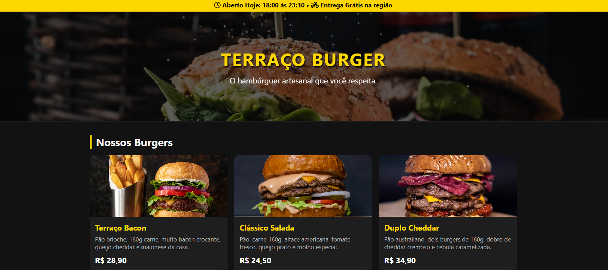

← Voltar aos Projetos
Terraço burger: Sistema de Pedidos

Sobre o Projeto
Sistema de pedidos para ham ria com cardapio digital, montagem de pedidos e fluxo rapido de atendimento. Focado em agilidade, organizacao da fila e experiencia do cliente.
Detalhes do Projeto
- Tipo: Sistema de Pedidos para Hamburgeria
- Objetivo: Agilizar pedidos e organizar o fluxo de atendimento
- Funcionalidades:
- Cardapio digital com categorias
- Montagem de pedidos com adicionais
- Carrinho e resumo do pedido
- Envio para cozinha e status do pedido
- Controle de pedidos do dia
- Layout responsivo para atendimento no balcao
Tecnologias Utilizadas
HTML5
CSS3
JavaScript